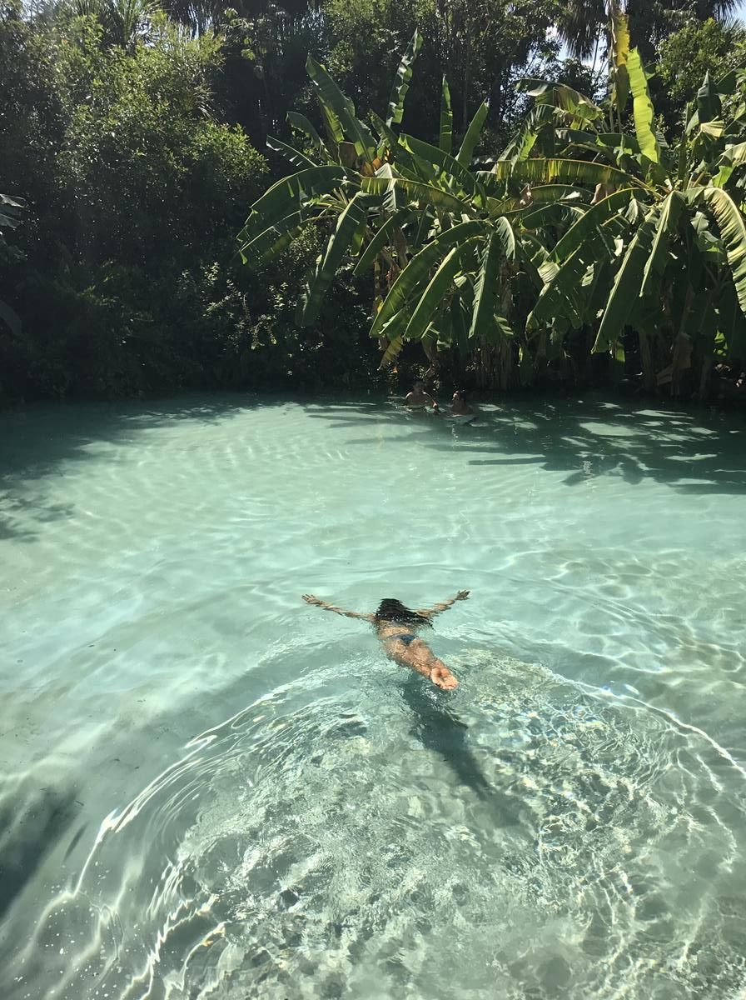

4,5 de 5
Hotel A Exemplo fictício
"A equipe me recebeu muito bem, e a rua é movimentada até tarde. Voltei a pé do jantar tranquila."
- Acolhimento
- Atendimento
- Segurança
Pesquise um destino no Brasil e veja o que dizem sobre segurança e acolhimento.
Conte como foi a sua hospedagem. A gente mostra o que o sistema entende do seu texto.
Envie sua avaliação para ver a análise.
Real Hospedagens, avaliações do treino e dados do Anuário.
Simulado Hotéis fictícios, notas, preços e relatos.
4,5 de 5
"A equipe me recebeu muito bem, e a rua é movimentada até tarde. Voltei a pé do jantar tranquila."
4,5 de 5
"O quarto é excelente e o café é ótimo, mas a rua fica escura à noite e preferi não sair a pé."
Indício, não prova: a base não informa gênero.
Avaliações enviadas que esperam revisão.
Ficam salvos neste navegador.
Destinos, hospedagens e relatos para planejar sua viagem sozinha.
Clique em uma oca para abrir a cidade.
Com relatos simulados Com hospedagens
Seis perguntas, cinco perfis e sugestões para você.
Escolha um lugar do mundo e veja o destino brasileiro parecido.

Escolha o destino e o mês para ver a melhor época e o que levar.
Central de Atendimento à Mulher. Gratuita, 24 horas.
Polícia Militar.
Samu e Bombeiros.
Fonte: gov.br.
O Okaí nasceu na disciplina de Extração e Análise de Dados para ajudar mulheres a planejar viagens sozinhas pelo Brasil com mais confiança.
Júlia Ferraz, Giovana Couto, Rebeca Bertozzi, Alicia Pizoni e Sofia Bastos
Em tupi antigo, oka quer dizer casa. Oka é o nosso compromisso com a sua proteção, e o Í é o convite para explorar o Brasil. Sua casa está onde você decidir estar.
Fonte: Navarro, Dicionário de tupi antigo (2013).
A OkaIA é uma IA e pode errar. Em perigo imediato, ligue 190.